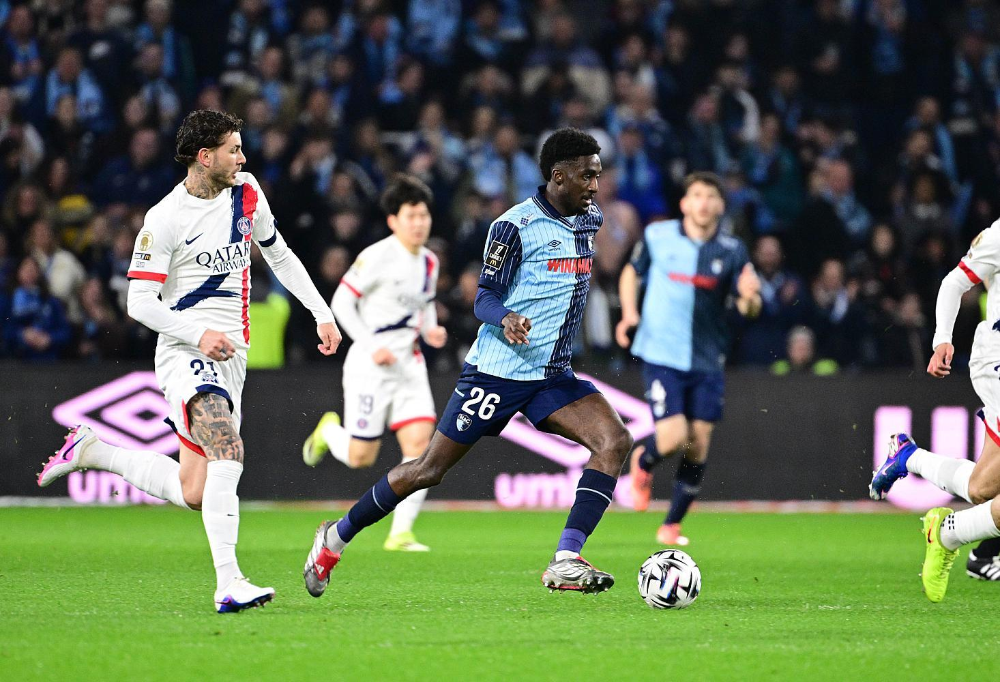

Le Havre host Paris Saint-Germain in a Matchday 9 Ligue 1 fixture. (Illustrative image)
The Le Havre vs PSG match is one of the major Ligue 1 searches on October 30, 2026, as Paris Saint-Germain travel to face Le Havre at Stade Océane.
The match is part of the ninth round of the 2026–27 French Ligue 1 season. PSG entered the fixture as league leaders following their recent victory over Lyon, while Le Havre were looking to improve their position after a difficult start to the campaign.
The latest available live-score snapshot shows Le Havre 1–2 Paris Saint-Germain. The goals recorded in the available match feed include Josh Maja's opening goal for Le Havre, followed by goals from Mika Godts and Achraf Hakimi for PSG.
Le Havre vs PSG Live Score Today
The match is part of Matchday 9 of the French Ligue 1 season. The live snapshot retrieved shows Le Havre 1–2 PSG, with three goals already recorded inside the opening half-hour.
Goals recorded in the available live feed:
- 18': Josh Maja (Le Havre), assist Rayan Fofana
- 26': Mika Godts (PSG), assist Achraf Hakimi
- 28': Achraf Hakimi (PSG), assist Senny Mayulu
Match Information
| Detail | Information |
|---|---|
| Match | Le Havre vs Paris Saint-Germain |
| Date | Friday, October 30, 2026 |
| Competition | French Ligue 1 |
| Matchday | 9 |
| Stadium | Stade CMA CGM Océane |
| Location | Le Havre, France |
| Kick-off | 7:00 PM CET |
| Referee | François Letexier |
| Home team | Le Havre AC |
| Away team | Paris Saint-Germain |
| Stadium capacity | 25,178 spectators |
Le Havre vs PSG: Goals and Match Timeline
The available match commentary records three goals during the opening stages.
18th minute: Le Havre take the lead
Josh Maja scored the opening goal for Le Havre, with Rayan Fofana providing the assist. The home side made an early impact against the league leaders.
26th minute: PSG equalise
Mika Godts scored for Paris Saint-Germain after receiving an assist from Achraf Hakimi. PSG quickly brought the match level.
28th minute: PSG move ahead
Achraf Hakimi scored PSG's second goal, assisted by Senny Mayulu. The visitors moved in front after scoring twice in a short period.
This timeline reflects the currently retrieved event feed and may be updated as the match progresses.
Confirmed Starting Lineups: Le Havre vs PSG
The match coverage published before kick-off reported the following starting teams. The player information is also reflected in the live match listing.
Le Havre starting lineup (3-4-3)
- Goalkeeper: Arnaud Bodart
- Defenders: Ayumu Seko, Junior Mwanga, Ahmed Touba
- Midfielders: Djibril Ouziad, Simon Ebonog, Amir Richardson, Lamine N'Diaye
- Forwards: Sota Nakamura, Rayan Fofana, Josh Maja
Paris Saint-Germain starting lineup (4-3-3)
- Goalkeeper: Matvey Safonov
- Defenders: Achraf Hakimi, Ilya Zabarnyi, Lucas Hernández, Lucas Digne
- Midfielders: Senny Mayulu, Warren Zaïre-Emery, Dro Fernández
- Forwards: Maghnes Akliouche, Ferrán Torres, Mika Godts
Le Havre Team News and Injury Updates
Le Havre entered this match with several reported unavailable players.
The pre-match team information listed:
- Lionel Mpasi-Nzau
- Elias Jelert
- Stephan Zagadou
- Timothée Pembélé
- Felix Mambimbi
These players were listed as unavailable because of injuries in the retrieved team information. Availability can change, so this should be checked against the final club update.
PSG Team News and Injury Updates
Paris Saint-Germain also had several players listed as unavailable before the fixture.
The reported absences included:
- Marquinhos
- Nuno Mendes
- Khvicha Kvaratskhelia
- Ousmane Dembélé
Their absence is relevant to PSG's defensive and attacking options. The reported starting lineup nevertheless included several established first-team players alongside younger squad members.
How Were Both Teams Performing Before the Match?
Le Havre's recent form
Le Havre arrived after a difficult sequence of results. Their reported recent matches included:
| Opponent | Result |
|---|---|
| Marseille | Lost 3–4 |
| Auxerre | Lost 1–3 |
| Lille | Lost 0–1 |
| Toulouse | Lost 2–3 |
| Angers | Drew 0–0 |
The defeat against Marseille was particularly notable. Le Havre were four goals behind before scoring three times, but they ultimately lost 4–3.
PSG's recent form
PSG had a stronger run of results before the game.
| Opponent | Result |
|---|---|
| Lyon | Won 2–0 |
| Barcelona | Won 4–2 |
| Strasbourg | Won 3–1 |
| Manchester City | Won 4–2 |
| Le Mans | Won 3–1 |
These results reflect the recent-match list in the retrieved match coverage. Not every result in that list is a Ligue 1 fixture.
Le Havre vs PSG Head-to-Head Record
The historical record available before this fixture favoured Paris Saint-Germain.
Across the eight previous meetings shown in the match data:
| Head-to-head statistic | Record |
|---|---|
| Le Havre wins | 0 |
| PSG wins | 7 |
| Draws | 1 |
| Total meetings | 8 |
Le Havre had not recorded a victory in those eight meetings, while PSG had won seven. This is the historical record reported in the available match source, not a complete all-time record independently verified here.
Live Match Statistics
The available match-statistics snapshot provides an interesting picture of the contest.
| Statistic | Le Havre | PSG |
|---|---|---|
| Possession | 24% | 76% |
| Expected goals (xG) | 1.20 | 0.83 |
| Total shots | 5 | 5 |
| Touches in opposition box | 9 | 13 |
PSG had significantly more possession, but the available xG figure was higher for Le Havre. This shows why possession alone does not explain the quality of a team's scoring opportunities.
These are source-reported live statistics and can change during the match.
Ligue 1 Table: Why This Match Matters
The match is important for both clubs because they entered it from very different positions.
PSG: The club entered the fixture in first place after a 2–0 win over Lyon. The pre-match report listed five wins, two draws and one defeat in eight league games.
Le Havre: The club entered the fixture in 18th place, with no wins, six defeats and two draws in its first eight league matches.
For PSG, the match offered an opportunity to maintain their position near the top of the table. For Le Havre, points at home were important in their effort to move away from the bottom of the standings.
The final impact on the table will depend on the confirmed result and other fixtures.
Where to Watch Le Havre vs PSG
Broadcast availability depends on the country.
The retrieved match listing identifies the following services:
- DAZN and Ligue 1+ in France.
- DAZN services in Belgium and Switzerland.
- beIN Sports Canada and beIN Sports Canada Español in Canada.
Viewers should check their local broadcaster and subscription availability before kick-off.
Final Note
This article is a live-match explainer, not a confirmed final match report. The score, goal events and statistics above reflect the retrieved live feed. Refresh official live coverage for the latest status.
This article reflects reporting available on October 30, 2026. It should be updated with the confirmed half-time and full-time result when available.